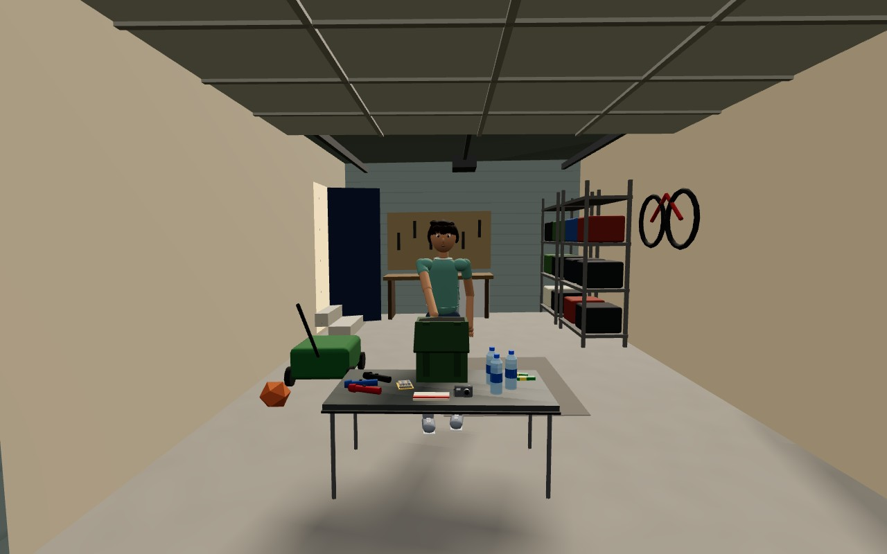
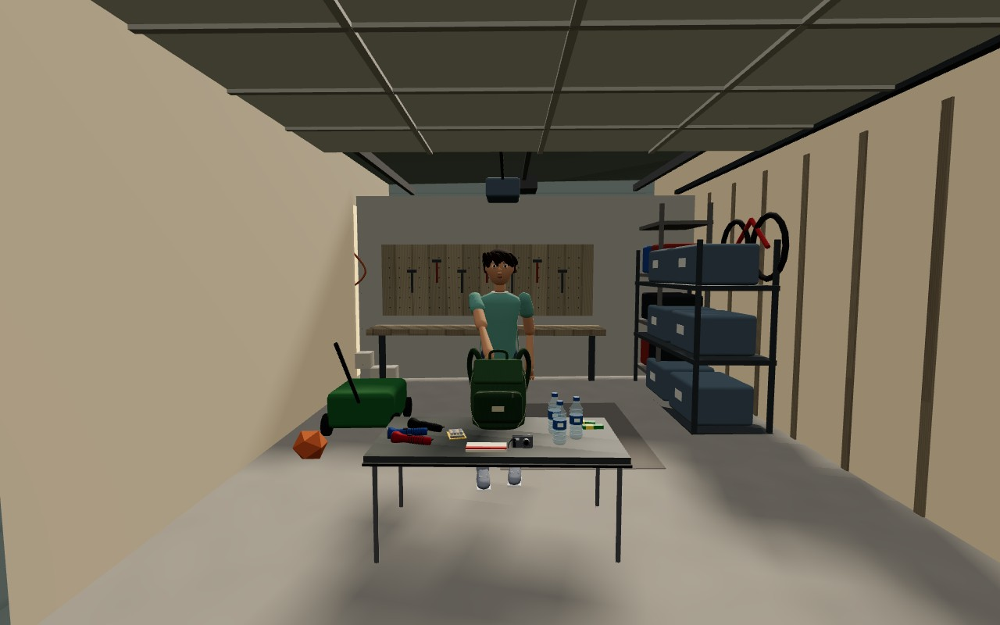
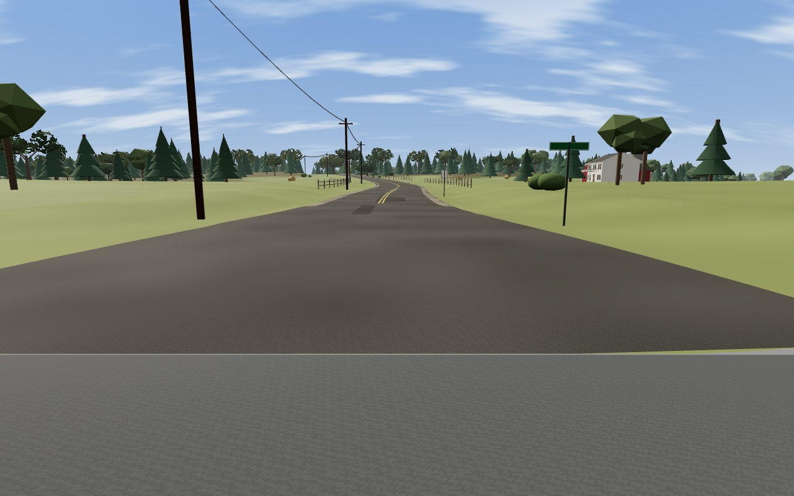
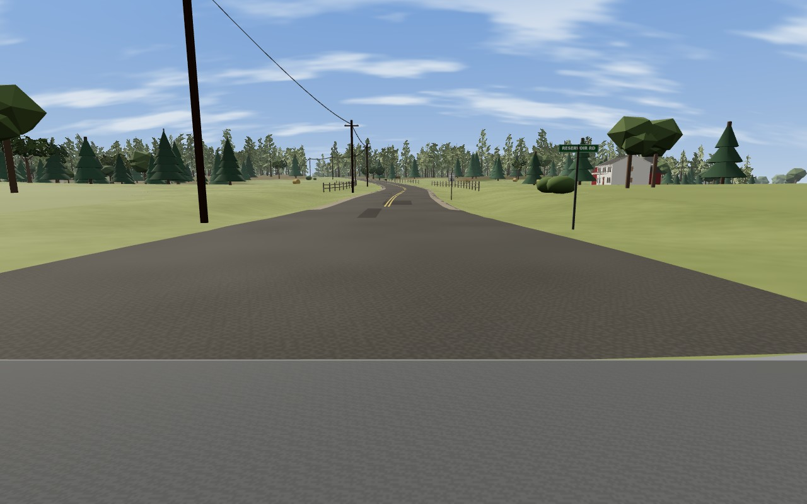
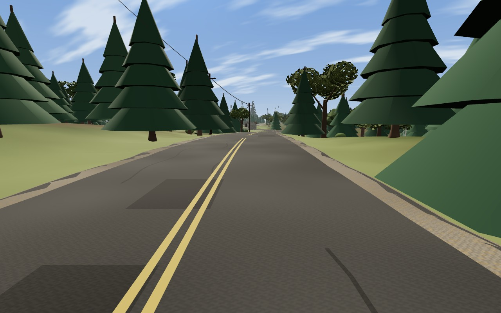
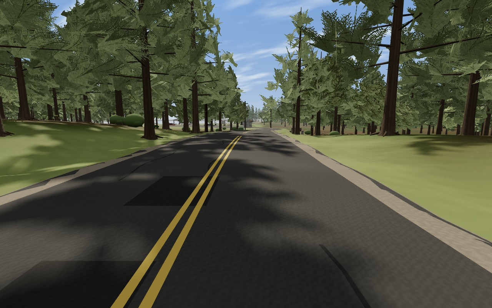
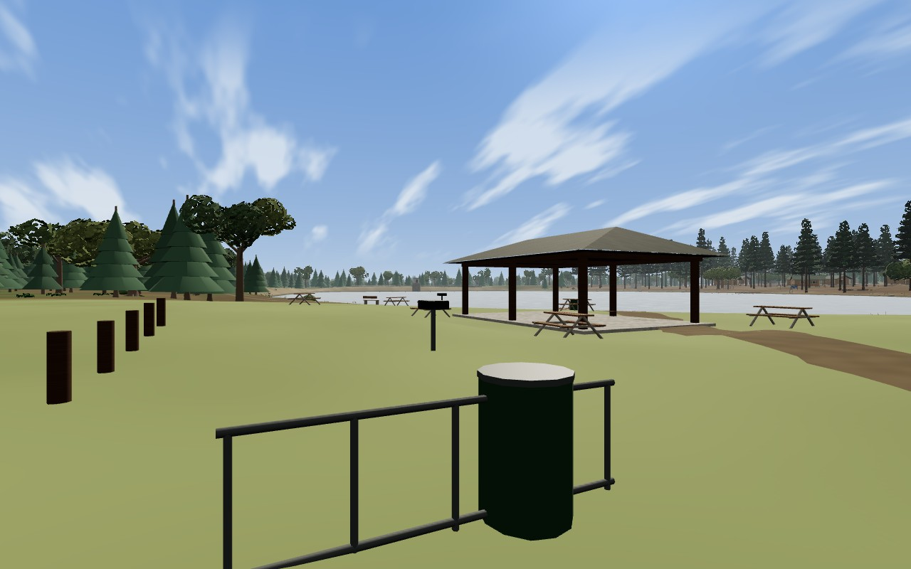
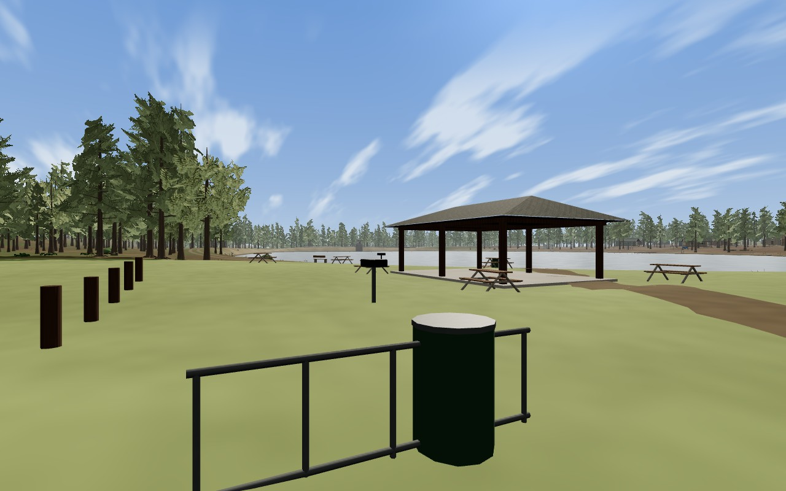
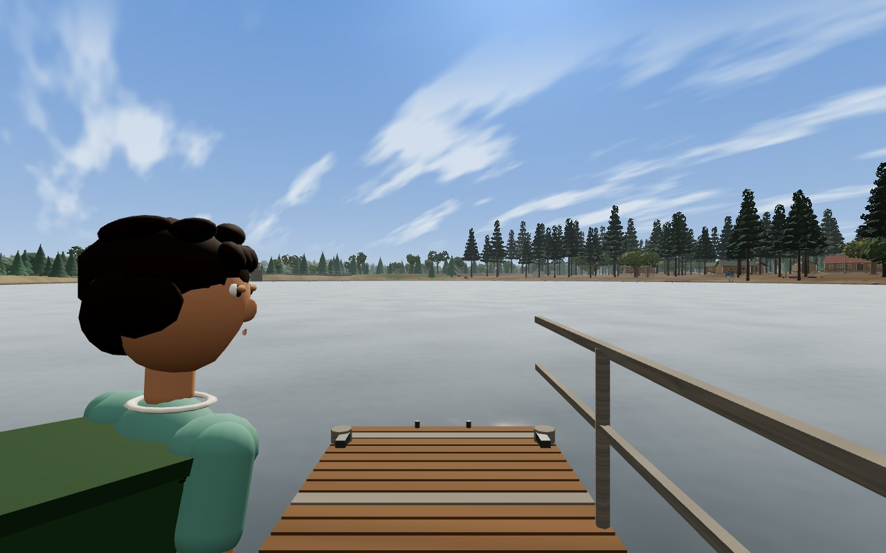
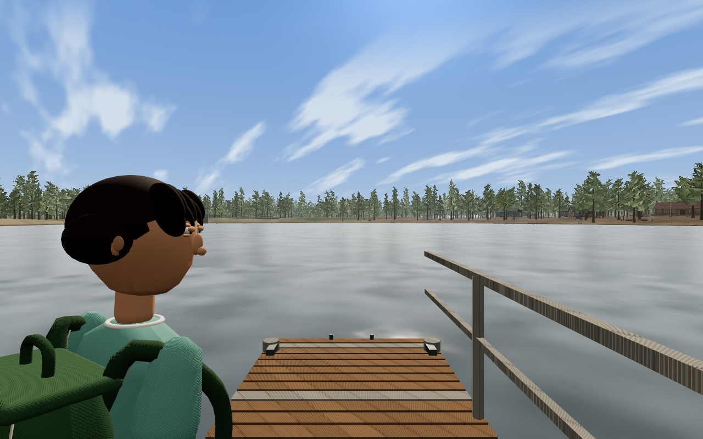

Last Light — Chapter Five comparison
17 matched player-height views, before and after reconstruction. Chromium / SwiftShader, Low, 1280 × 800. These are game captures, not concept art.
Scene captures: 4bf39029b29fc01b91584217f6d2d99dbfe81cf7. The final runtime adds only the shirt-fold correction, covered by the final interaction review. Validation summary and limitations.
Garage

Accepted repair: 299 draws · 455,598 triangles
Astra reconstruction: 378 draws · 483,094 trianglesRide

Accepted repair: 297 draws · 356,978 triangles
Astra reconstruction: 385 draws · 277,316 trianglesCrest

Accepted repair: 331 draws · 596,412 triangles
Astra reconstruction: 450 draws · 532,828 trianglesPark

Accepted repair: 264 draws · 607,515 triangles
Astra reconstruction: 383 draws · 388,876 trianglesDock Memory

Accepted repair: 260 draws · 506,161 triangles
Astra reconstruction: 410 draws · 430,201 triangles